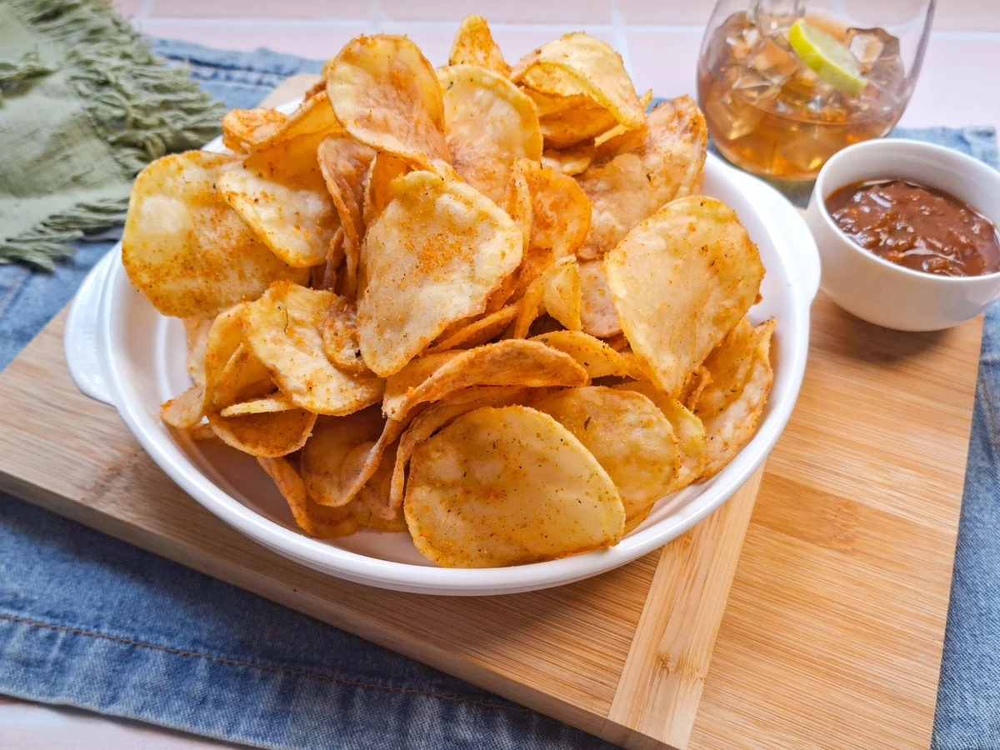
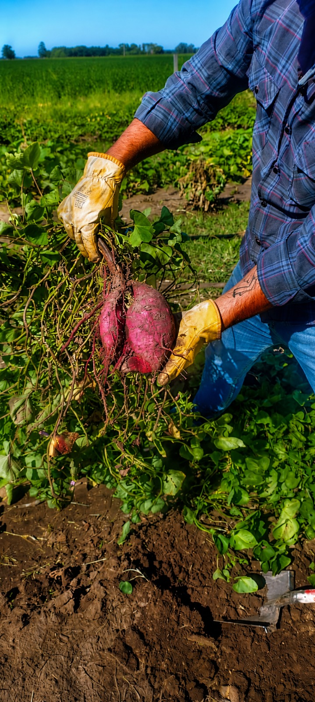

NUESTROS PRODUCTOS
Sabores con identidad local
Cada variedad de Batat Rojense busca combinar alimentación saludable, producción artesanal y sabores únicos desarrollados desde una mirada educativa.

ORIGINAL
Chip de batata
Batata crocante con sal marina y cocción artesanal.

INTENSA
Dulce de batata
Toques especiados con perfil ahumado suave.

ESPECIAL
Batata Natural
Del campo a tu casa
Clásica Natural
Elaborada con ingredientes simples y producción artesanal.